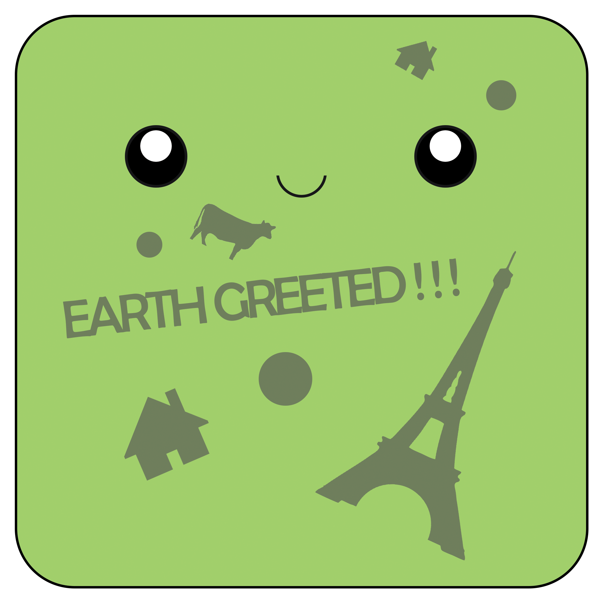

A slime goes to vegas is a 3d adventure game starring everyone's favorite lovable slime Mitch! In this game you start off by dropping from the sky on to a small farm. From here you eat your surroundings to eventually become big enough to the rock blocking your path. Through out the game you will have to consume enough objects to eventually be able to devour the Eiffel Tower!
This project was for a game jam hosted by Spartasoft. I was the producer and designer for this project. My contributions was the programming for the UI and the level layout. I created an entire map out of probuilder and then coordinated with the rest of my team to bring that map to life.
